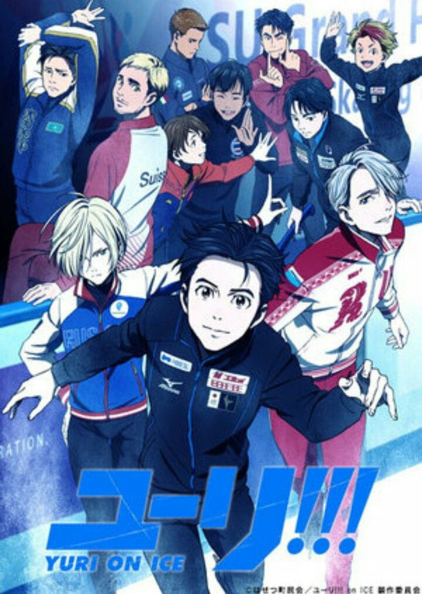

Director: Sayo Yamamoto
Estudio: MAPPA
Episodios: 12
Tras sufrir una aplastante derrota, el patinador sobre hielo Yuri Katsuki contempla retirarse, hasta que el legendario campeón Victor Nikiforov se ofrece sorpresivamente a ser su entrenador.
Deportes, patinaje artístico, drama, superación
Este video tiene restricción de reproducción externa en sitios web.
▶️ Ver Tráiler en YouTube